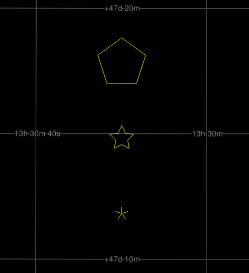
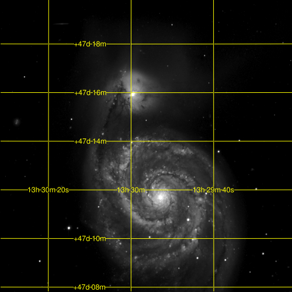
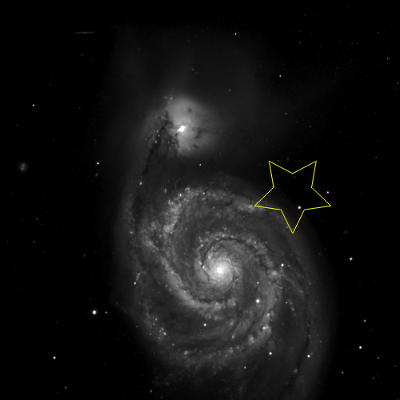
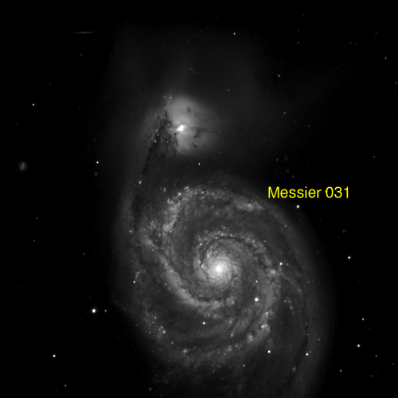

Coordinate Systems, Colors and Symbols
In addition to the above there are state directives for color specification, coordinate system and symbol reference size/shape). There can be multiple instance of each overlay type and the state directives are "sticky". For instance, if you set the color, that color applies to all subsequent overlay directives on the command line until another color is specified. The coordinate system directive applies to all the overlays except "-grid", where there are specific arguments for this (which don't stick).
All the lines, symbols, and text are drawn / typeset anti-aliased and for labelled curves (e.g., latitude lines) the text follows the curve of the line. In a few situations some labels get twisted a little too fast and become hard to read but this is very rare.
Colors can be specified in standard HTML hex notation (e.g., "f1a3e7") (see, for instance, http://www.w3schools.com/html/html_colors.asp) or by a few names for convenience (black, white, red, green, blue, magenta, cyan, yellow, gray). A note on hex encoding: since people are so used to it from HTML, we allow a leading pound sign (e.g., "-color #a02ce8"). However, if put in scripts for shells based on sh the pound can be taken as the beginning of a comment block. So either avoid the pound, use a non-sh shell, or put the argument in quotes.
The coordinate system can be Equatorial, Galactic, or Ecliptic (in fact the code just matches the first two characters case insensitive so "ga" is adequate). Where appropriate, the system can be followed by epoch/equinox information (B/J for Besselian/Julian and a year). Of course this only applies to Equatorial and Ecliptic since Galactic does not precess.
The symbol directive sets the reference size for symbols and their shape. The size can be one of three variants: a relative size (based on a fraction of the plot height)[default], in arcseconds, arcminutes, or degrees (denoted by a 's', 'm', or 'd' suffix), or in pixels (a 'p' suffix).
Symbol drawing can be a little confusing. The text below describes the symbol syntax but it is often easier to absorb through examples. See: Montage Cookbook: Symbols
The symbol shape can be one of a pre-defined set: triangle, box/square, diamond, pentagon, hexagon, septagon, octagon, el (an right angle between two line segments), circle or compass. The el and compass symbols are usually used as stand-alone "compass rose" markers.
Alternatively, the shape can be a user-defined shape of which there are three types: a simple N-sided 'polygon', a 'starred' polygon (2N vertices with every other on a half radius), or a 'skeletal' polygon (N points connected to the center by radial lines). This mode requires two parameters in addition to the symbol size: the type and the value of N. Optionally, you can also give a rotation angle for any symbol. So "-symbol 2.0s polygon 3" is a triangle with one vertex pointing straight up and "-symbol 2.0s polygon 3 90." is the same triangle but with a vertex pointing to the right.
In the example on the right, we have three symbols, each with five "sides". The top one is a simple five-sided polygon, one arcminute in radius ("1m polygon 5"). The middle one is "starred" and 30 arcseconds in radius ("30s starred 5") and the bottome one is "skeletal" and fifteen arcseconds in radius ("15s skeletal 5").
Example state directives:
-csys Equatorial B1950 -csys ga -color red -color ff00ff -symbol 2.0 circle -symbol 15p starred 5 36.
Each of the overlay directives has additional parameters. Here are examples for the non-table overlays:
|
Coordinate Grid
mViewer -color yellow \
-grid Equatorial J2000 \
-gray SDSS_g.fits 0s max gaussian-log \
-out grid.png
Example data can be downloaded here. The coordinate system specification is the same as for the "-csys" directive above. |
 |
|
Markers
mViewer -color yellow \
-csys Equatorial J2000 \
-symbol 3.0 starred 5 36 \
-mark 202.41667 47.23333 \
-gray SDSS_g.fits 0s max gaussian-log \
-out marker.png
The coordinate system and symbol already being set, all that is needed to place a marker is are current coordinates. |
 |
|
Labels
mViewer -color yellow \
-csys Equatorial J2000 \
-label 202.41667 47.23333 "Messier 031" \
-gray SDSS_g.fits 0s max gaussian-log \
-out label.png
mViewer uses a general font mechanism but at this point only has one font loaded, so all the labelling needs to give are the coordinates and text string. About Fonts mViewer uses the FreeType library and the FreeSans.ttf font file. This includes regular Latin and Greek characters (as well as Japanese Kana, etc.) The FreeType library is comfortable with any TrueType font file, so swapping in an alternative one is straightforward.
The input to the library is Unicode, which many of todays applications (like editors) can handle directly. The details are application-specific, but if you can get special characters into the mViewer command (script files are a good way), mViewer will render them, e.g.,
-label 88.79294 7.40706 "α Orionis"
|
 |